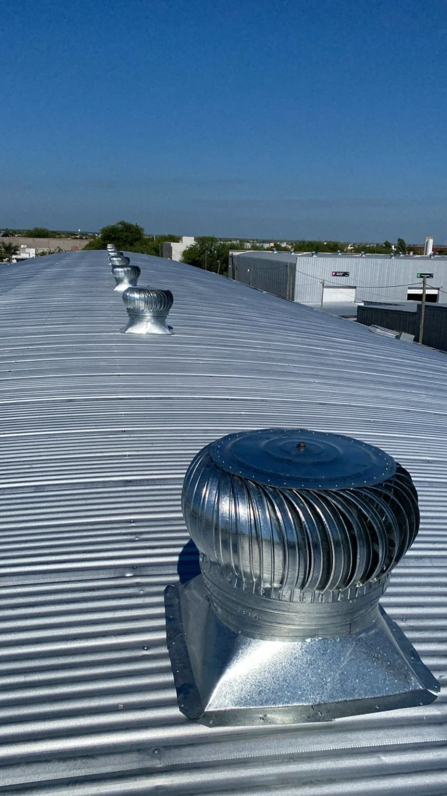

Sobre Nosotros
Somos una herrería de Santiago del Estero especializada en la construcción de tinglados, techos, galpones y sobretechos.
Nuestros Trabajos





Contacto
📍 Sauce Bajada, camino a Vilmer, Santiago del Estero
📞 3854335084
📧 angelesmorenatorres90@gmail.com
Solicitar Presupuesto por WhatsApp